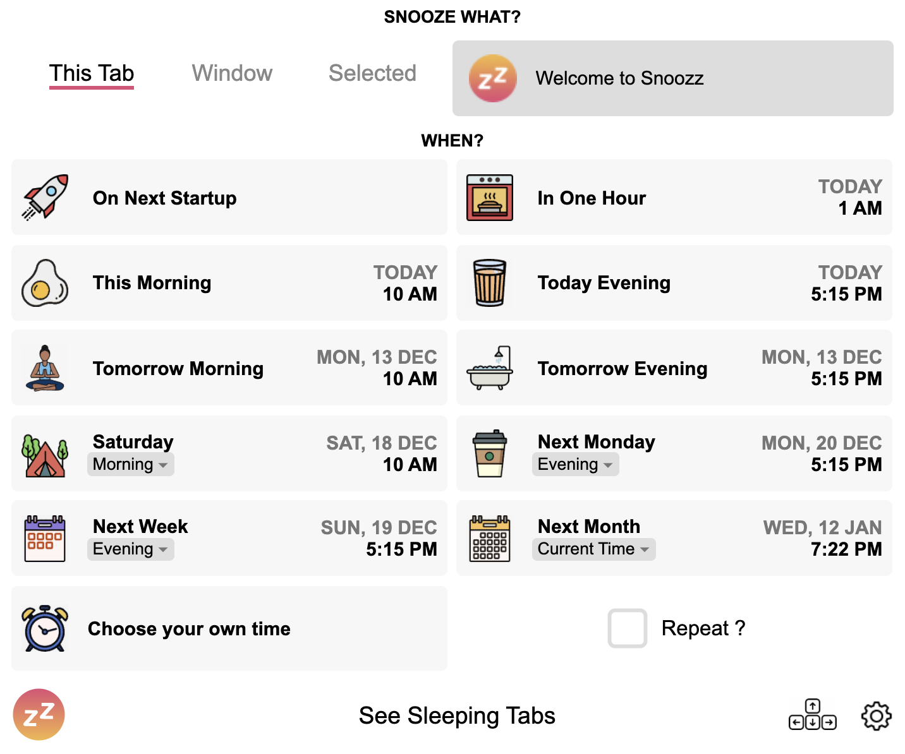
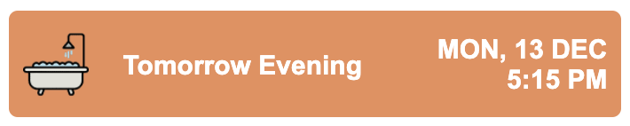
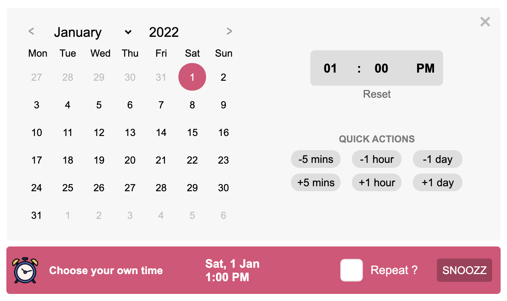
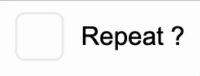

Welcome to Snoozz
Let's snooze your first tab.
Step 1
Find the Snoozz icon in the top right corner of your browser.
It may be hiding inside a 🧩 menu.
Don't forget to pin it 📌 to your toolbar if its hidden.
Step 2
Click on the icon to open the Snoozz popup.

Step 3
Choose what you want to snooze: a tab, window or selected tabs.
Hold down Cmd ⌘ / Ctrl / Shift and click on multiple tabs in your browser to enable the Selected option.
Step 4
Select one of the 11 choices in the popup to snooze your tab.

Whatever you selected in Step 3 will automatically close and be saved in the Nap Room.
You can view it by clicking on See Sleeping Tabs at the bottom of the popup.
🎉
Thats it!
Your tab is asleep and will reopen at the time you selected.
BTW
You can also click on Choose your own time to select a specific time and date.

Also BTW
Toggle the Repeat checkbox to view all the recurring snooze options.

One Last Thing
Click on the Gear Icon in the popup or Nap Room to open the Settings page.
You can customise Snoozz extensively to make it your own:
- Change Morning and Evening times.
- Configure your own Keyboard Shortcuts.
- Choose the options in the Context Menu (when you right click on a link).
- Changes Themes and toggling Dark Mode.
- Switch between 12 and 24 hour time.
- Change the first day of the week.